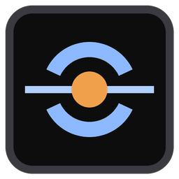

Download
LLM Gateway
Share the AI models on your computer with your team through a private, secure address. It sets everything up for you.
Windows Your computer
Windows 10 or 11, 64-bit. An NVIDIA graphics card is best.
Download for WindowsMac Your computer
Apple silicon (M1 or newer), macOS 13 or newer, 16 GB memory or more.
Download for MacSet it up
- Put it anywhere and double-click it. It keeps its settings in a folder next to itself, so a USB stick works too.
- If Windows shows “Windows protected your PC”, click More info, then Run anyway.
- The dashboard opens in your browser and installs Ollama (runs the models) and Tailscale (the secure address) by itself. Click Yes if Windows asks for permission.
- Sign in to Tailscale on the page that opens. Then pick your models on the Models tab and create a key for each person on the Users tab.
- Unzip it and drag LLM Gateway into Applications.
- The first time only: right-click the app, choose Open, then Open again. If macOS still blocks it, go to System Settings › Privacy & Security and click Open Anyway.
- The dashboard opens in your browser and installs Ollama by itself. For Tailscale it opens the download page: install it, open it once and allow its VPN setting. Setup carries on by itself.
- Add a model in Terminal, for example
ollama pull qwen3:8b, then choose it on the Models tab and create keys on the Users tab. It lives in the menu bar at the top of the screen.
Why the warning? The app isn't registered with Microsoft or Apple yet, so they show a one-time warning for new apps. You only need to approve it once.
What it does
Private by design
Your models run on your own computer. Each person gets their own key, and you can pause or turn off access at any time.
Sets itself up
Installs the model server and the secure connection for you, and starts quietly when you sign in.
Usage you can see
Requests, tokens and electricity per person, with reports you can export.